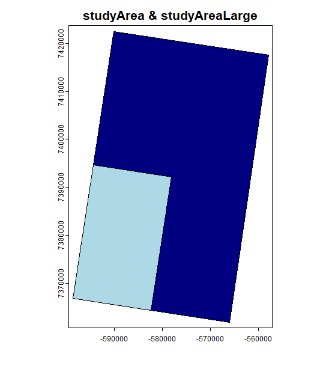

15Forest Landscape Modelling with LandR and setupProject
Author
Ceres Barros
Published
June 11, 2024
2 hours – estimated time for 1st time executing (includes downloads)
24Gb RAM – estimated peak RAM for executing
93Gb disk – estimated hard drive allocation
LandR is a forest landscape model implemented as a collection of SpaDES modules in R. It is a reimplementation of LANDIS-II Biomass Succession Extension v.3.2.1, which at its core is very similar to v7. See the LandR Manual, Barros et al. (2023) and Scheller and Miranda (2015) for full details about forest dynamics simulated in LandR.
LandR fully open-source and users are expected to use, modify it and expand it (e.g. by creating new modules) as they see fit, as long has modifications are adequately reported. We hope that new modules are shared with others in the LandR community of users so that all can benefit.
Each LandR module is hosted in its own GitHub repository. When using and developing LandR modules, note that modules should be semi-independent. This is, they should be able to run error-free on their own, even they don’t produce useful outputs in this way. A good example are the “data preparation” and “data calibration” modules Biomass_speciesData and Biomass_borealDataPrep which can run on their own but will not produce any forest landscape simulations, only the input objects and parameters that Biomass_core (the “simulation module”) needs.
In this example, we will setup the workflow published in Barros et al. (2023) using setupProject from the SpaDES.project package and current versions of the LandR modules.
Important 15.1: Google account needed for this example
You need to have a Google account to access some of the data using the googledrive R package (part of the tidyverse family)1.
During the simInit() (or simInitAndSpades()) call R will prompt you to either choose a previously authenticated account (if you have previously used googledrive) or to open a browser window and authenticate. Make sure you give tidyverse read/write access to your files:
We will eventually transition to not hosting data on Google. Until then, our apologies for any inconvenience.
15.1 All the steps of an ecological modelling project in a continuous workflow
15.2 Workflow setup
Show code
repos <-c("predictiveecology.r-universe.dev", getOption("repos"))install.packages("SpaDES.project", repos = repos, dependencies =TRUE)library(SpaDES.project)out <-setupProject(## INPUT OBJECTS -----------------------------------## these need to come *before* any formal arguments, as they are needed for params.RsppEquivCol ="Boreal",vegLeadingProportion =0,successionTimestep =10L,eventCaching =c(".inputObjects", "init"),useParallel =FALSE,paths =list("packagePath"="packages/","projectPath"="~/SpaDES_book/LandRDemo_coreVeg"),packages =c(## these are needed but don't load"DiagrammeR", "PredictiveEcology/SpaDES.experiment@development (HEAD)","terra" ),options =list("LandR.assertions"=TRUE,"reproducible.destinationPath"= paths$inputPath,"spades.inputPath"= paths$inputPath,"spades.moduleCodeChecks"=FALSE,"repos"= repos ),modules =c("PredictiveEcology/Biomass_speciesData@main","PredictiveEcology/Biomass_borealDataPrep@main","PredictiveEcology/Biomass_speciesParameters@main","PredictiveEcology/Biomass_core@main" ),## SIMULATION SETUP ------------------------------------times =list(start =2001, end =2031),params ="PredictiveEcology/PredictiveEcology.org@training-book/tutos/LandRDemo_coreVeg/params.R",## (more) INPUT OBJECTS -----------------------------------## these come after, so that we don't need to pre-install/load LandR## species lists/traitssppEquiv = {data("sppEquivalencies_CA", package ="LandR") sppEquivalencies_CA[grep("Pin", LandR), `:=`(EN_generic_short ="Pine",EN_generic_full ="Pine",Leading ="Pine leading")] sppEquivalencies_CA[grep("Betu_pap", LandR), `:=`(EN_generic_short ="Birch",EN_generic_full ="Birch",Leading ="Birch leading")]## all Popu will be merged sppEquivalencies_CA[grep("Popu_", LandR), `:=`(EN_generic_short ="Poplar",EN_generic_full ="Poplar",Leading ="Poplar leading")] sppEquivalencies_CA[grep("Popu_", LandR), Boreal :="Popu_Spp"]## define spp column to use for model sppEquivalencies_CA <- sppEquivalencies_CA[!"", on = sppEquivCol] sppEquivalencies_CA <-na.omit(sppEquivalencies_CA, sppEquivCol) sppEquivalencies_CA },speciesParams = {list("shadetolerance"=list(Betu_Pap =1 , Lari_Lar =1 , Pice_Gla =2 , Pice_Mar =3 , Pinu_Ban =1.5 , Popu_Spp =1 ) ) },studyArea = { originalcrs <-"+proj=longlat +datum=NAD83 +no_defs +ellps=GRS80 +towgs84=0,0,0" Biomass_corecrs <-"+proj=lcc +lat_1=49 +lat_2=77 +lat_0=0 +lon_0=-95 +x_0=0 +y_0=0 +datum=NAD83 +units=m +no_defs +ellps=GRS80 +towgs84=0,0,0" smallExtent <-c(xmin =-104.757, xmax =-104.48835, ymin =55.68663, ymax =55.94491) studyAreaS <- terra::vect(terra::ext(smallExtent)) studyAreaS <- terra::vect(terra::geom(studyAreaS), "polygons", crs = originalcrs, atts =data.frame(id =1:length(studyAreaS))) studyAreaS <- terra::project(studyAreaS, Biomass_corecrs) studyAreaS },studyAreaLarge = { originalcrs <-"+proj=longlat +datum=NAD83 +no_defs +ellps=GRS80 +towgs84=0,0,0" Biomass_corecrs <-"+proj=lcc +lat_1=49 +lat_2=77 +lat_0=0 +lon_0=-95 +x_0=0 +y_0=0 +datum=NAD83 +units=m +no_defs +ellps=GRS80 +towgs84=0,0,0" largeExtent <-c(xmin =-104.757, xmax =-104.2197, ymin =55.68663, ymax =56.20319) studyAreaL <- terra::vect(terra::ext(largeExtent)) studyAreaL <- terra::vect(terra::geom(studyAreaL), "polygons", crs = originalcrs, atts =data.frame(id =1:length(studyAreaL))) studyAreaL <- terra::project(studyAreaL, Biomass_corecrs) studyAreaL },## OUTPUTS TO SAVE -----------------------outputs = {rbind(data.frame(objectName ="cohortData", saveTime =seq(times$start, times$end) ),data.frame(objectName ="pixelGroupMap", saveTime =seq(times$start, times$end) ) ) })
If you have a look at Section 17.1 in the Chapter 17 chapter, you will see some differences in the way we setup the two workflows:
paths. Here we left the defaults for all paths (see ?setupPaths() for the list of path options) except for the project location (projectPath) and the location of the package library (packagePath, which will be placed inside projectPath).
options. We also set a couple of “global options” that determine the where data will be downloaded to (“reproducible.destinationPath”). This will be the same as the default directory to look for inputs (“spades.inputPath”). Notice how we used paths$ to get these directory paths from the paths object that setupProject creates (based on the paths argument above) prior to setting the options.
other arguments (...). Almost all other arguments in the call above were passed to .... These are objects that need to be supplied by the user for these modules (e.g. studyArea and studyAreaLarge) or whose defaults we want to override (e.g., the species table, sppEquiv, and trait values, speciesParams). To avoid creating them on the .GlobalEnv first, we take advantage of setupProject‘s ability to run the code in { } and make these polygons. Note that these arguments are passed prior to any ’formal arguments’ (see ?formalArgs())
15.3 Run simulation
You can initialise the and run the workflow in two separate steps…
Code
## initialise then run simulation simInitOut <- SpaDES.core::simInit2(out)simOut <- SpaDES.core::spades(simInitOut)
… or together, using simInitAndSpades2()
Code
simOut <- SpaDES.core::simInitAndSpades2(out)
15.3.1 Inspect the workflow, its inputs, outputs and parameters
Now that we have a simulation we can inspect it. Let’s assume you initialised and ran your simulation with two separate simInit2() and spades() calls.
Inspect module connections and between-module object flows:
Note the scheduling of the init events in simInitOut and how simOut has future events scheduled too – thanks to this, we can extend the simulation beyond the original SpaDES.core::end(sim) of 2031 (Extend the simulation).
We could even plot some of the input and output rasters to check that they are as we expected – no need to look for these objects files, they are all in the simList.
Code
## spatial inputs from list aboveterra::plot(simOut$studyAreaLarge, col ="navyblue", main ="studyArea & studyAreaLarge")terra::plot(simOut$studyArea, col ="lightblue", add =TRUE)## spatial outputs from list aboveterra::plot(simOut$vegTypeMap, col =hcl.colors(palette ="Dynamic", n =length(unique(simOut$vegTypeMap[]))), main ="")terra::plot(simOut$speciesLayers)

Study areas used for parameterisation (dark blue) and simulation (light blue).
Last year’s vegetation type map (leading species).
Percent cover of species retained for simulation.
Inspecting inputs and outputs directly from the simList
More importantly in our view, is the ability to inspect statistical models used to fit model parameters. This is possible because the developers have declared the fitted statistical model objects as module outputs. Often, this type of information is buried in supplementary materials of papers and incomplete (e.g. coefficients and goodness-of-fit statistics are presented, but the entire model object, with its fitted values, residuals, etc., are not).
By exporting entire model objects, and making them available via repeatable code or data repositories, model transparency and potential scrutiny are massively increased.
Code
## model used to estimate species establishment probabilitiessummary(simOut$modelBiomass$mod)plot(simOut$modelBiomass$mod)## model used to calibrate Picea glauca's growth parameterssummary(simOut$speciesGrowthCurves$Pice_Gla$NonLinearModel$Pice_Gla)
15.3.2 Turn plotting on after setting up the workflow
We can change parameters and re-run the simulation to, e.g., activate live plotting in Biomass_core, without having to
change the parameter provided to setupProject
repeat the setupProject call
Note that because simOut is actually a copy of simInitOut (see the output of SpaDES.core::completed(simInitOut)), this still means that simInitOut has to be re-generated for this purpose, otherwise spades would try to resume the simulation from the “last year”.
Thanks to internal caching, it will only take seconds to “redo” simInitOut. You will also notice that init events are retrieved from cache, this time around2.
We can also keep it going for a few more years. Use SpaDES.core::end() to extend the simulation another 20 years and then call SpaDES.core::spades() on the changedsimList (not the one output by `SpaDES.core::simInit2()) to resume the simulation from 2031.
In Barros et al. (2023), the model was run with two different parameterisation approaches one that was “data hungry” and calibrated tree species growth parameters (using Biomass_speciesParameters as we have done above) and a simpler one that used default parameter values (without Biomass_speciesParameters).
SpaDES and LandR allow us to swap parameterisation/calibration approaches easily and re-evaluate each and compare the models (see Barros et al. (2023)).
Do to this, we simply exclude Biomass_speciesParameters from out and run a second simulation. We also need to save the outputs in a different folder, or the previous ones will be overriden.
There are several ways to debug SpaDES modules (see Chapter 13), a relatively easy one for when you are suprised by an error occurring during specific event is to pass the event’s name to spades(..., debug = ) argument.
Below, we debug the plotSummaryBySpecies event of Biomass_core. R interrupts the execution of the code in the chunk that executes this event’s operations (inside doEvent.Biomass_core())
From there you can press ENTER, F10 or the “Next” button to execute the code line-by-line. At some point you will get to this line:
Code
sim <-plotSummaryBySpecies(sim)
which calls the function that effectively makes the summary plots. If you spotted a problem during the plotSummaryBySpecies event (or maybe you want to see what it does and/or change the code) and it hasn’t been triggered yet, then it’s likely it happened in this function.
Before running the line you can debugonce(plotSummaryBySpecies) to enable debugging the function and spot the issue.
Another option would be to insert a browser() at the top of the function’s definition inside the module code or the R scripts in the module’s R/ folder (<modulePath>/<module_name>/R/). In this case look for plotSummaryBySpecies <- compiler::cmpfun(function(sim) {...} inside the module code (Biomass_core.R) and try putting a browser() inside the {}
15.6 Try on your own
Try re-running the workflow with a different set of study areas. For example:
Barros, Ceres, Yong Luo, Alex M. Chubaty, Ian M. S. Eddy, Tatiane Micheletti, Céline Boisvenue, David W. Andison, Steven G. Cumming, and Eliot J. B. McIntire. 2023. “Empowering Ecological Modellers with a PERFICT Workflow: Seamlessly Linking Data, Parameterisation, Prediction, Validation and Visualisation.”Methods in Ecology and Evolution 14 (1): 173–88. https://doi.org/10.1111/2041-210X.14034.
Scheller, Robert M., and Brian R. Miranda. 2015. LANDIS-II Biomass Succession V3.2 Extension User Guide.